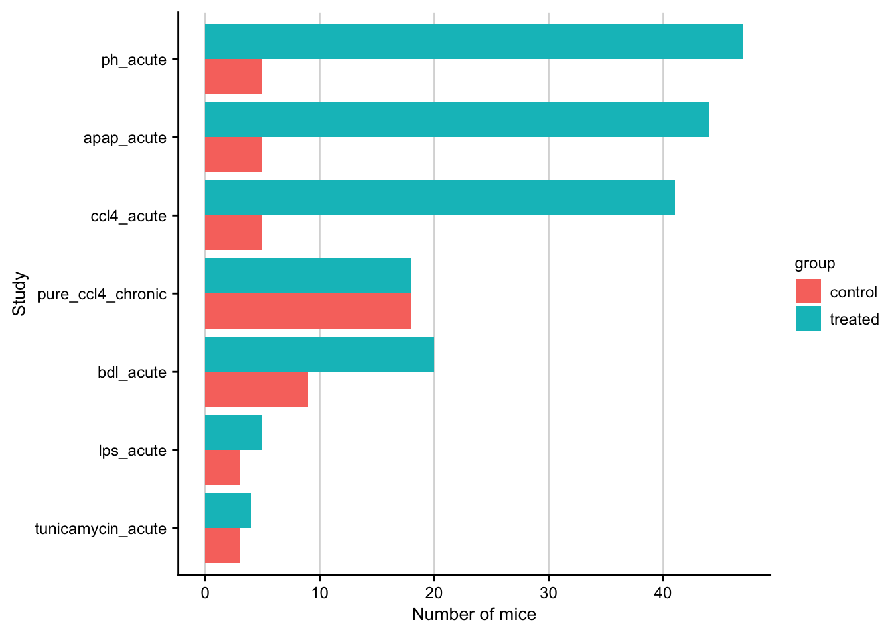
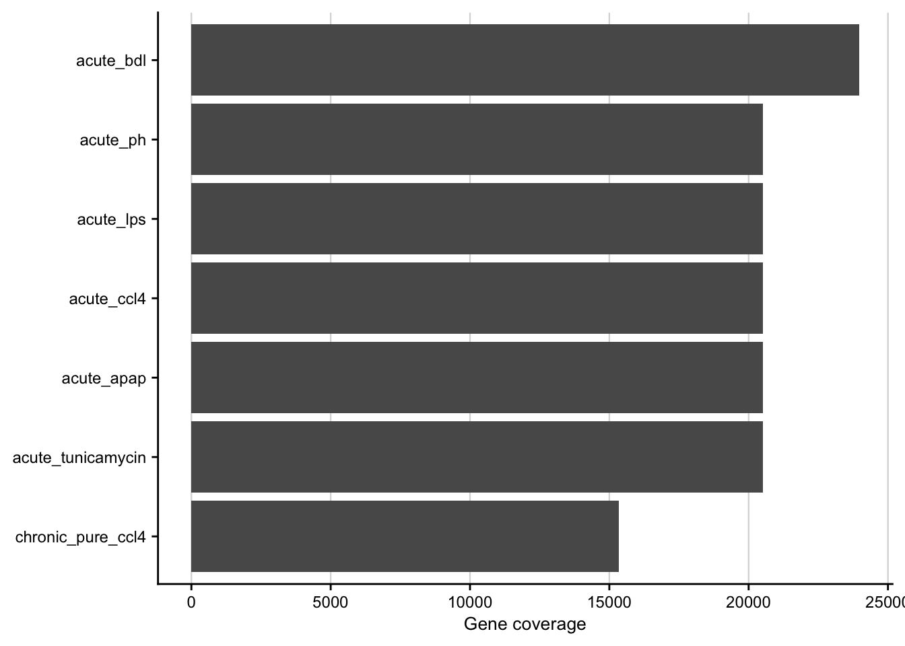
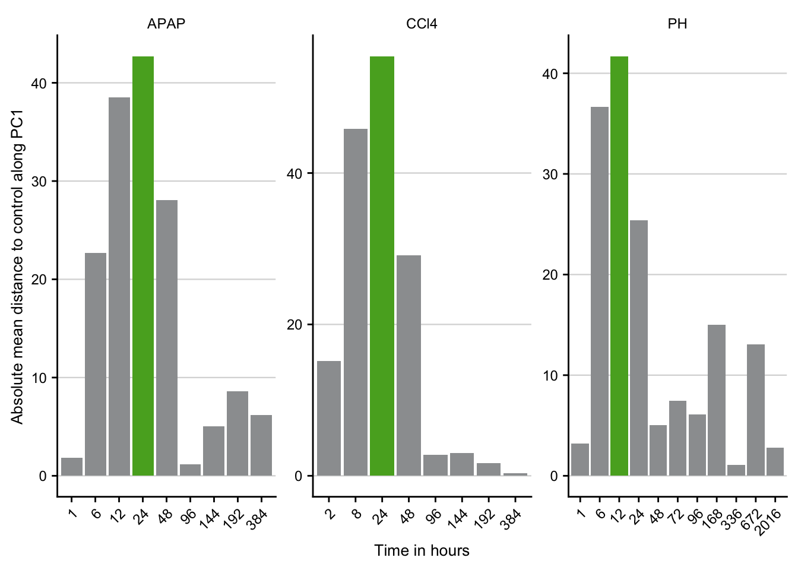
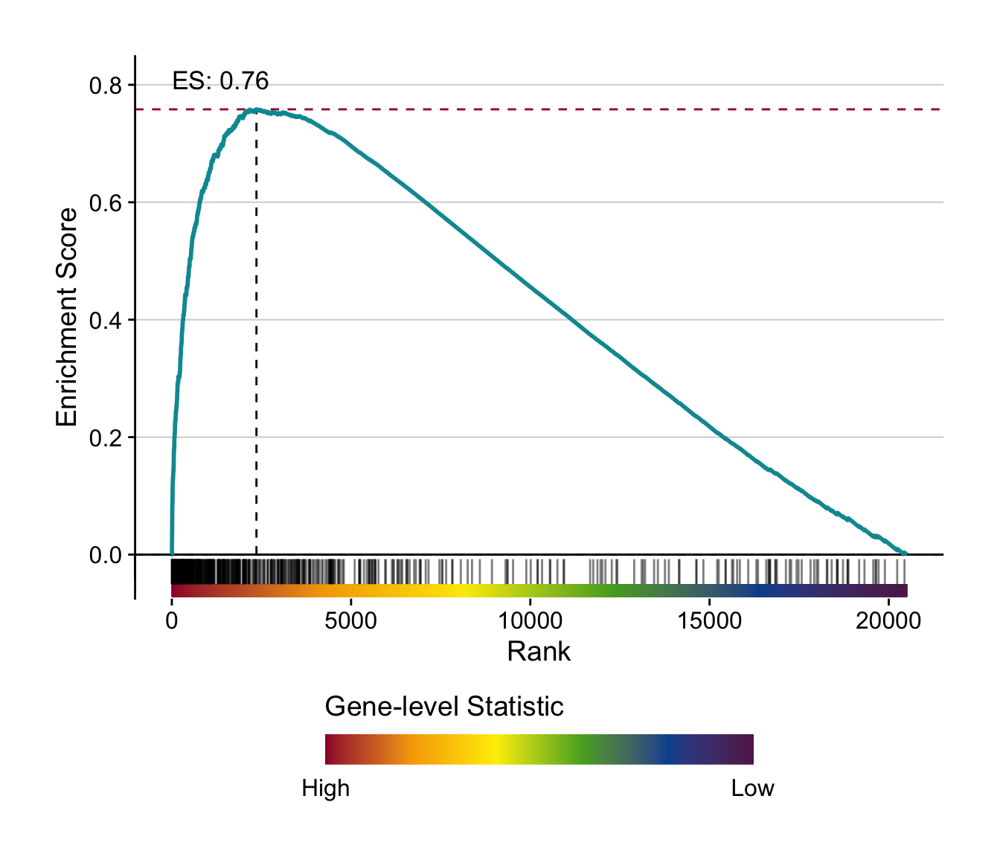
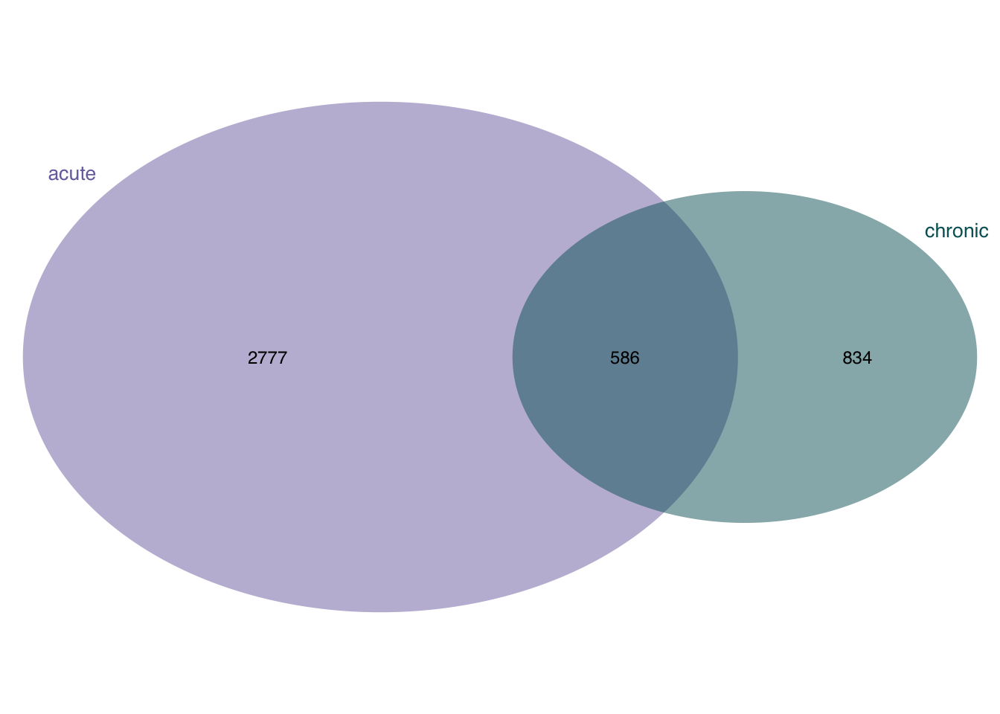
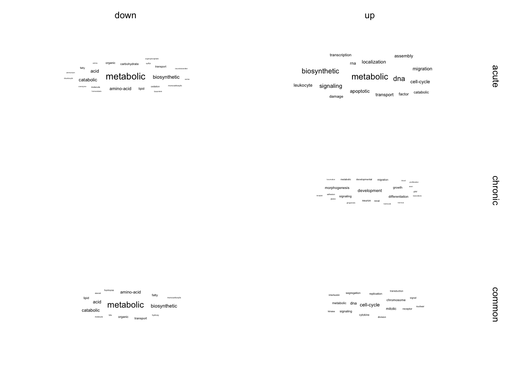

Meta analysis comparing chronic and acute mouse models
Christian H. Holland
2020-12-19
Last updated: 2020-12-21
Checks: 7 0
Knit directory: meta-liver/
This reproducible R Markdown analysis was created with workflowr (version 1.6.2). The Checks tab describes the reproducibility checks that were applied when the results were created. The Past versions tab lists the development history.
Great! Since the R Markdown file has been committed to the Git repository, you know the exact version of the code that produced these results.
Great job! The global environment was empty. Objects defined in the global environment can affect the analysis in your R Markdown file in unknown ways. For reproduciblity it’s best to always run the code in an empty environment.
The command set.seed(20201218) was run prior to running the code in the R Markdown file. Setting a seed ensures that any results that rely on randomness, e.g. subsampling or permutations, are reproducible.
Great job! Recording the operating system, R version, and package versions is critical for reproducibility.
Nice! There were no cached chunks for this analysis, so you can be confident that you successfully produced the results during this run.
Great job! Using relative paths to the files within your workflowr project makes it easier to run your code on other machines.
Great! You are using Git for version control. Tracking code development and connecting the code version to the results is critical for reproducibility.
The results in this page were generated with repository version ba48919. See the Past versions tab to see a history of the changes made to the R Markdown and HTML files.
Note that you need to be careful to ensure that all relevant files for the analysis have been committed to Git prior to generating the results (you can use wflow_publish or wflow_git_commit). workflowr only checks the R Markdown file, but you know if there are other scripts or data files that it depends on. Below is the status of the Git repository when the results were generated:
Ignored files:
Ignored: .DS_Store
Ignored: .Rhistory
Ignored: .Rproj.user/
Ignored: analysis/human-diehl-nafld_cache/
Ignored: analysis/human-hampe13-nash_cache/
Ignored: analysis/human-hampe14-misc_cache/
Ignored: analysis/human-hoang-nafld_cache/
Ignored: analysis/human-ramnath-fibrosis_cache/
Ignored: analysis/meta-mouse-vs-human_cache/
Ignored: analysis/mouse-acute-apap_cache/
Ignored: analysis/mouse-acute-bdl_cache/
Ignored: analysis/mouse-acute-ccl4_cache/
Ignored: analysis/mouse-acute-lps_cache/
Ignored: analysis/mouse-acute-ph_cache/
Ignored: analysis/mouse-acute-tunicamycin_cache/
Ignored: analysis/mouse-chronic-ccl4_cache/
Ignored: analysis/plot-study-overview_cache/
Ignored: code/.DS_Store
Ignored: code/README.html
Ignored: data/.DS_Store
Ignored: data/README.html
Ignored: data/annotation/
Ignored: data/human-diehl-nafld/
Ignored: data/human-hampe13-nash/
Ignored: data/human-hampe14-misc/
Ignored: data/human-hoang-nafld/
Ignored: data/human-ramnath-fibrosis/
Ignored: data/meta-chronic-vs-acute/
Ignored: data/meta-mouse-vs-human/
Ignored: data/mouse-acute-apap/
Ignored: data/mouse-acute-bdl/
Ignored: data/mouse-acute-ccl4/
Ignored: data/mouse-acute-lps/
Ignored: data/mouse-acute-ph/
Ignored: data/mouse-acute-tunicamycin/
Ignored: data/mouse-chronic-ccl4/
Ignored: external_software/.DS_Store
Ignored: external_software/README.html
Ignored: external_software/stem/.DS_Store
Ignored: figures/
Ignored: output/.DS_Store
Ignored: output/README.html
Ignored: output/human-diehl-nafld/
Ignored: output/human-hampe13-nash/
Ignored: output/human-hampe14-misc/
Ignored: output/human-hoang-nafld/
Ignored: output/human-ramnath-fibrosis/
Ignored: output/meta-chronic-vs-acute/
Ignored: output/meta-mouse-vs-human/
Ignored: output/mouse-acute-apap/
Ignored: output/mouse-acute-bdl/
Ignored: output/mouse-acute-ccl4/
Ignored: output/mouse-acute-lps/
Ignored: output/mouse-acute-ph/
Ignored: output/mouse-acute-tunicamycin/
Ignored: output/mouse-chronic-ccl4/
Ignored: renv/library/
Ignored: renv/staging/
Unstaged changes:
Modified: analysis/mouse-chronic-ccl4.Rmd
Note that any generated files, e.g. HTML, png, CSS, etc., are not included in this status report because it is ok for generated content to have uncommitted changes.
These are the previous versions of the repository in which changes were made to the R Markdown (analysis/meta-chronic-vs-acute.Rmd) and HTML (docs/meta-chronic-vs-acute.html) files. If you’ve configured a remote Git repository (see ?wflow_git_remote), click on the hyperlinks in the table below to view the files as they were in that past version.
| File | Version | Author | Date | Message |
|---|---|---|---|---|
| Rmd | ba48919 | christianholland | 2020-12-21 | added go downstream analysis |
| html | 4616e4b | christianholland | 2020-12-20 | Build site. |
| Rmd | a7e9e57 | christianholland | 2020-12-20 | complete analyses |
Introduction
Here we integrate various acute liver damage mouse models with the chronic CCl4 mouse model to identify chronic exclusively and commonly regulated genes.
Libraries and sources
These libraries and sources are used for this analysis.
library(tidyverse)
library(tidylog)
library(here)
library(tidytext)
library(readxl)
library(fgsea)
library(dorothea)
library(progeny)
library(biobroom)
library(circlize)
library(AachenColorPalette)
library(lemon)
library(VennDiagram)
library(ComplexHeatmap)
library(ggwordcloud)
library(msigdf) # remotes::install_github("ToledoEM/msigdf@v7.1")
options("tidylog.display" = list(print))
source(here("code/utils-utils.R"))
source(here("code/utils-plots.R"))Definition of global variables that are used throughout this analysis.
# i/o
data_path <- "data/meta-chronic-vs-acute"
output_path <- "output/meta-chronic-vs-acute"
# graphical parameters
# fontsize
fz <- 9
# color function for heatmaps
col_fun <- colorRamp2(
c(-4, 0, 4),
c(aachen_color("blue"), "white", aachen_color("red"))
)Merging data of all mouse models
Merging contrasts
Contrasts from all available mouse models are merged into a single object.
# acute
tun <- readRDS(here("output/mouse-acute-tunicamycin/limma_result.rds")) %>%
mutate(treatment = "tunicamycin", source = "wek", class = "acute")
#> mutate: new variable 'treatment' (character) with one unique value and 0% NA
#> new variable 'source' (character) with one unique value and 0% NA
#> new variable 'class' (character) with one unique value and 0% NA
lps <- readRDS(here("output/mouse-acute-lps/limma_result.rds")) %>%
filter(contrast == "inLiver_lps_vs_ctrl") %>%
mutate(treatment = "lps", source = "godoy", class = "acute")
#> filter: removed 143,563 rows (88%), 20,509 rows remaining
#> mutate: new variable 'treatment' (character) with one unique value and 0% NA
#> new variable 'source' (character) with one unique value and 0% NA
#> new variable 'class' (character) with one unique value and 0% NA
acute_ccl4 <- readRDS(here("output/mouse-acute-ccl4/limma_result.rds")) %>%
filter(contrast_reference == "ccl4") %>%
select(-contrast_reference) %>%
mutate(treatment = "ccl4", source = "godoy", class = "acute")
#> filter: removed 164,072 rows (50%), 164,072 rows remaining
#> select: dropped one variable (contrast_reference)
#> mutate: new variable 'treatment' (character) with one unique value and 0% NA
#> new variable 'source' (character) with one unique value and 0% NA
#> new variable 'class' (character) with one unique value and 0% NA
ph <- readRDS(here("output/mouse-acute-ph/limma_result.rds")) %>%
filter(contrast_reference == "hepatec") %>%
select(-contrast_reference) %>%
mutate(treatment = "ph", source = "godoy", class = "acute")
#> filter: removed 225,599 rows (50%), 225,599 rows remaining
#> select: dropped one variable (contrast_reference)
#> mutate: new variable 'treatment' (character) with one unique value and 0% NA
#> new variable 'source' (character) with one unique value and 0% NA
#> new variable 'class' (character) with one unique value and 0% NA
apap <- readRDS(here("output/mouse-acute-apap/limma_result.rds")) %>%
filter(contrast_reference == "apap") %>%
select(-contrast_reference) %>%
mutate(treatment = "apap", source = "ghallab", class = "acute")
#> filter: removed 184,581 rows (50%), 184,581 rows remaining
#> select: dropped one variable (contrast_reference)
#> mutate: new variable 'treatment' (character) with one unique value and 0% NA
#> new variable 'source' (character) with one unique value and 0% NA
#> new variable 'class' (character) with one unique value and 0% NA
bdl <- readRDS(here("output/mouse-acute-bdl/limma_result.rds")) %>%
filter(contrast_reference == "bdl") %>%
select(-contrast_reference) %>%
mutate(treatment = "bdl", source = "ghallab", class = "acute")
#> filter: removed 215,676 rows (69%), 95,856 rows remaining
#> select: dropped one variable (contrast_reference)
#> mutate: new variable 'treatment' (character) with one unique value and 0% NA
#> new variable 'source' (character) with one unique value and 0% NA
#> new variable 'class' (character) with one unique value and 0% NA
# chronic
chronic_ccl4 <- readRDS(here("output/mouse-chronic-ccl4/limma_result.rds")) %>%
filter(contrast_reference == "pure_ccl4") %>%
select(-contrast_reference) %>%
mutate(
source = "ghallab", class = "chronic",
treatment = "pure_ccl4"
)
#> filter: removed 138,042 rows (75%), 46,014 rows remaining
#> select: dropped one variable (contrast_reference)
#> mutate: new variable 'source' (character) with one unique value and 0% NA
#> new variable 'class' (character) with one unique value and 0% NA
#> new variable 'treatment' (character) with one unique value and 0% NA
combined_contrasts <- bind_rows(
tun, lps, acute_ccl4, apap,
ph, bdl, chronic_ccl4
) %>%
mutate(contrast = as_factor(contrast))
#> mutate: no changes
saveRDS(combined_contrasts, here(output_path, "limma_result.rds"))Merging meta data
Meta data from all available mouse models are merged into a single object.
# acute
tun <- readRDS(here("output/mouse-acute-tunicamycin/meta_data.rds")) %>%
mutate(treatment = "tunicamycin", source = "wek", class = "acute")
#> mutate: new variable 'treatment' (character) with one unique value and 0% NA
#> new variable 'source' (character) with one unique value and 0% NA
#> new variable 'class' (character) with one unique value and 0% NA
lps <- readRDS(here("output/mouse-acute-lps/meta_data.rds")) %>%
filter(origin == "liver") %>%
transmute(sample, group = case_when(treatment == "control" ~ "control",
TRUE ~ "treated")) %>%
mutate(treatment = "lps",
source = "godoy",
class = "acute")
#> filter: removed 13 rows (62%), 8 rows remaining
#> transmute: dropped 3 variables (treatment, origin, time)
#> converted 'group' from factor to character (0 new NA)
#> mutate: new variable 'treatment' (character) with one unique value and 0% NA
#> new variable 'source' (character) with one unique value and 0% NA
#> new variable 'class' (character) with one unique value and 0% NA
acute_ccl4 <- readRDS(here("output/mouse-acute-ccl4/meta_data.rds")) %>%
mutate(group = case_when(time == 0 ~ "control",
TRUE ~ "treated"),
treatment = "ccl4",
source = "godoy") %>%
select(sample, group, time, treatment, source) %>%
mutate(time = as.character(time),
class = "acute")
#> mutate: converted 'group' from factor to character (0 new NA)
#> new variable 'treatment' (character) with one unique value and 0% NA
#> new variable 'source' (character) with one unique value and 0% NA
#> select: dropped 2 variables (rep, run)
#> mutate: converted 'time' from ordered factor to character (0 new NA)
#> new variable 'class' (character) with one unique value and 0% NA
ph <- readRDS(here("output/mouse-acute-ph/meta_data.rds")) %>%
mutate(group = case_when(time == 0 ~ "control",
TRUE ~ "treated"),
treatment = "ph",
source = "godoy") %>%
select(-c(surgeon, year, mouse)) %>%
mutate(time = as.character(time),
class = "acute")
#> mutate: converted 'treatment' from factor to character (0 new NA)
#> converted 'group' from factor to character (0 new NA)
#> new variable 'source' (character) with one unique value and 0% NA
#> select: dropped 3 variables (mouse, surgeon, year)
#> mutate: converted 'time' from ordered factor to character (0 new NA)
#> new variable 'class' (character) with one unique value and 0% NA
apap <- readRDS(here("output/mouse-acute-apap/meta_data.rds")) %>%
mutate(group = case_when(time == 0 ~ "control",
TRUE ~ "treated"),
treatment = "apap",
source = "ghallab") %>%
select(sample, group, time, treatment, source) %>%
mutate(time = as.character(time),
class = "acute")
#> mutate: converted 'group' from factor to character (0 new NA)
#> new variable 'treatment' (character) with one unique value and 0% NA
#> new variable 'source' (character) with one unique value and 0% NA
#> select: dropped 2 variables (key, rep)
#> mutate: converted 'time' from ordered factor to character (0 new NA)
#> new variable 'class' (character) with one unique value and 0% NA
bdl <- readRDS(here("output/mouse-acute-bdl/meta_data.rds")) %>%
mutate(group = case_when(treatment == "sham" ~ "control",
TRUE ~ "treated"),
treatment = "bdl",
source = "ghallab") %>%
select(-mouse) %>%
mutate(time = as.character(time),
class = "acute")
#> mutate: converted 'treatment' from factor to character (0 new NA)
#> converted 'group' from factor to character (0 new NA)
#> new variable 'source' (character) with one unique value and 0% NA
#> select: dropped one variable (mouse)
#> mutate: converted 'time' from ordered factor to character (0 new NA)
#> new variable 'class' (character) with one unique value and 0% NA
# chronic
chronic_ccl4 <- readRDS(here("data/mouse-chronic-ccl4/meta_data.rds")) %>%
mutate(group = case_when(treatment == "ccl4" ~ "treated",
treatment %in% c("oil", "ctrl") ~ "control"),
treatment = "pure_ccl4",
source = "ghallab") %>%
select(sample, group, time, treatment, source) %>%
mutate(time = as.character(time),
class = "chronic")
#> mutate: converted 'treatment' from factor to character (0 new NA)
#> converted 'group' from factor to character (0 new NA)
#> new variable 'source' (character) with one unique value and 0% NA
#> select: columns reordered (sample, group, time, treatment, source)
#> mutate: converted 'time' from ordered factor to character (0 new NA)
#> new variable 'class' (character) with one unique value and 0% NA
combined_meta_data = bind_rows(tun, lps, acute_ccl4, ph, apap, bdl,
chronic_ccl4)
saveRDS(combined_meta_data, here(output_path, "meta_data.rds"))Number of mice
Barplot showing number of mice per study.
df = readRDS(here(output_path, "meta_data.rds")) %>%
count(treatment, source, group, class)
#> count: now 14 rows and 5 columns, ungrouped
df %>%
ggplot(aes(
x = n, fct_reorder(interaction(treatment, class, sep = "_"), n),
group = group, fill = group
)) +
geom_col(position = "dodge") +
labs(x = "Number of mice", y = "Study") +
my_theme(grid = "x", fsize = fz)
Gene coverage
Barplot showing the gene coverage of the acute and chronic mouse models.
contrasts <- readRDS(here(output_path, "limma_result.rds")) %>%
distinct(gene, treatment, source, class) %>%
count(treatment, source, class)
#> distinct: removed 615,293 rows (81%), 141,846 rows remaining
#> count: now 7 rows and 4 columns, ungrouped
contrasts %>%
ggplot(aes(x = n, fct_reorder(interaction(class, treatment, sep = "_"), n),
group = class)) +
geom_col() +
labs(x="Gene coverage", y=NULL) +
my_theme(grid = "x", fsize = fz) 
| Version | Author | Date |
|---|---|---|
| 4616e4b | christianholland | 2020-12-20 |
Time point of maximal liver damage
Here we identify for the acute CCl4, APAP and PH mouse model the time point with the strongest deregulated gene expression profile, based on PCA space. This time point is considered the time point of maximal liver damage.
pca_result_ccl4 = readRDS(here("output/mouse-acute-ccl4/pca_result.rds")) %>%
pluck("coords") %>%
select(sample, PC1, time) %>%
mutate(treatment_abbr = "CCl4",
time = as.character(time))
#> select: dropped 48 variables (PC2, PC3, PC4, PC5, PC6, …)
#> mutate: converted 'time' from ordered factor to character (0 new NA)
#> new variable 'treatment_abbr' (character) with one unique value and 0% NA
pca_result_apap = readRDS(here("output/mouse-acute-apap/pca_result.rds")) %>%
pluck("coords") %>%
select(sample, PC1, time) %>%
mutate(treatment_abbr = "APAP",
time = as.character(time))
#> select: dropped 51 variables (PC2, PC3, PC4, PC5, PC6, …)
#> mutate: converted 'time' from ordered factor to character (0 new NA)
#> new variable 'treatment_abbr' (character) with one unique value and 0% NA
pca_result_ph = readRDS(here("output/mouse-acute-ph/pca_result.rds")) %>%
pluck("coords") %>%
select(sample, PC1, time) %>%
mutate(treatment_abbr = "PH",
time = as.character(round(24*as.numeric(as.character(time)), 0)))
#> select: dropped 56 variables (PC2, PC3, PC4, PC5, PC6, …)
#> mutate: converted 'time' from ordered factor to character (0 new NA)
#> new variable 'treatment_abbr' (character) with one unique value and 0% NA
pca_result = bind_rows(pca_result_ccl4, pca_result_apap, pca_result_ph) %>%
mutate(time = ordered(as.numeric(time))) %>%
arrange(treatment_abbr, time)
#> mutate: converted 'time' from character to ordered factor (0 new NA)
pca_dist = pca_result %>%
group_by(time, treatment_abbr) %>%
summarise(mean_pc1_coord = mean(PC1)) %>%
ungroup() %>%
arrange(treatment_abbr) %>%
mutate(control_coord = case_when(time == 0 ~ mean_pc1_coord)) %>%
fill(control_coord) %>%
mutate(dist = abs(mean_pc1_coord -control_coord)) %>%
group_by(treatment_abbr) %>%
mutate(max = case_when(dist == max(dist) ~ "yes",
TRUE ~ "no")) %>%
ungroup() %>%
filter(time != 0)
#> group_by: 2 grouping variables (time, treatment_abbr)
#> summarise: now 31 rows and 3 columns, one group variable remaining (time)
#> ungroup: no grouping variables
#> mutate: new variable 'control_coord' (double) with 4 unique values and 90% NA
#> fill: changed 28 values (90%) of 'control_coord' (28 fewer NA)
#> mutate: new variable 'dist' (double) with 29 unique values and 0% NA
#> group_by: one grouping variable (treatment_abbr)
#> mutate (grouped): new variable 'max' (character) with 2 unique values and 0% NA
#> ungroup: no grouping variables
#> filter: removed 3 rows (10%), 28 rows remaining
saveRDS(pca_dist, here(output_path, "pca_dist.rds"))
pca_dist %>%
ggplot(aes(x=time, y=dist, fill=max)) +
geom_col() +
my_theme(grid = "y", fsize = fz) +
scale_fill_manual(values = aachen_color(c("black50", "green"))) +
labs(x = "Time in hours",
y = "Absolute mean distance to control along PC1") +
theme(legend.position = "none",
axis.text.x = element_text(angle = 45, hjust = 1)) +
facet_rep_wrap(~treatment_abbr, scales = "free")
| Version | Author | Date |
|---|---|---|
| 4616e4b | christianholland | 2020-12-20 |
Interstudy analysis of acute mouse models
Mutual similarity of differential expressed genes
This analysis computes the similarity of differential expressed genes for specific contrast of the acute mouse models. Similarity is measured with the Jaccard Index.
# select specific contrasts from the acute mouse models
contrast_of_interest <- c(
"treat_vs_ctrl", "inLiver_lps_vs_ctrl",
"ccl_24h_vs_0h", "apap_24h_vs_0h", "ph_0.5d",
"bdl_vs_sham_1d"
)
contrasts <- readRDS(here(output_path, "limma_result.rds")) %>%
filter(contrast %in% contrast_of_interest)
#> filter: removed 630,631 rows (83%), 126,508 rows remaining
# populate gene sets with a fixed size selected by effect size (t-value)
mat_top <- contrasts %>%
group_by(contrast, treatment, source, class) %>%
top_n(500, abs(statistic)) %>%
mutate(key = row_number()) %>%
ungroup() %>%
unite(geneset, class, source, treatment, contrast, sep = "-") %>%
mutate(geneset = as_factor(geneset)) %>%
select(geneset, gene, key) %>%
untdy(key, geneset, gene)
#> group_by: 4 grouping variables (contrast, treatment, source, class)
#> top_n (grouped): removed 123,508 rows (98%), 3,000 rows remaining
#> mutate (grouped): new variable 'key' (integer) with 500 unique values and 0% NA
#> ungroup: no grouping variables
#> mutate: converted 'geneset' from character to factor (0 new NA)
#> select: dropped 5 variables (logFC, statistic, pval, fdr, regulation)
#> select: columns reordered (key, geneset, gene)
#> spread: reorganized (geneset, gene) into (acute-wek-tunicamycin-treat_vs_ctrl, acute-godoy-lps-inLiver_lps_vs_ctrl, acute-godoy-ccl4-ccl_24h_vs_0h, acute-ghallab-apap-apap_24h_vs_0h, acute-godoy-ph-ph_0.5d, …) [was 3000x3, now 500x7]
# usage of jaccard index for balanced set sizes
j <- set_similarity(mat_top, measure = "jaccard", tidy = T)
#> gather: reorganized (acute-wek-tunicamycin-treat_vs_ctrl, acute-godoy-lps-inLiver_lps_vs_ctrl, acute-godoy-ccl4-ccl_24h_vs_0h, acute-ghallab-apap-apap_24h_vs_0h, acute-godoy-ph-ph_0.5d, …) into (set2, similarity) [was 6x7, now 36x3]
#> drop_na: removed 15 rows (42%), 21 rows remaining
#> filter: removed 6 rows (29%), 15 rows remaining
#> mutate_if: converted 'set1' from character to factor (0 new NA)
#> converted 'set2' from character to factor (0 new NA)
#> mutate: changed 0 values (0%) of 'set1' (0 new NA)
saveRDS(j, here(output_path, "gene_set_similarity.rds"))
j %>%
ggplot(aes(x = set1, y = set2, fill = similarity)) +
geom_tile(color = "black") +
scale_fill_gradient(low = "white", high = aachen_color("green")) +
labs(x = NULL, y = NULL, fill = "Jaccard\nIndex") +
theme(axis.text.x = element_text(angle = 45, hjust = 1)) +
my_theme(fsize = fz, grid = "no")
| Version | Author | Date |
|---|---|---|
| 4616e4b | christianholland | 2020-12-20 |
Mutual enrichment of differential expressed genes
This analysis explores whether the top differential expressed genes of specific contrasts of the acute mouse models are consistently regulated across the acute mouse models.
# select specific contrasts from the acute mouse models
contrast_of_interest <- c(
"treat_vs_ctrl", "inLiver_lps_vs_ctrl",
"ccl_24h_vs_0h", "apap_24h_vs_0h", "ph_0.5d",
"bdl_vs_sham_1d"
)
contrasts <- readRDS(here(output_path, "limma_result.rds")) %>%
filter(contrast %in% contrast_of_interest)
#> filter: removed 630,631 rows (83%), 126,508 rows remaining
# populate gene sets with a fixed size selected by effect size (t-value)
genesets_top <- contrasts %>%
mutate(direction = case_when(
sign(statistic) >= 0 ~ "up",
sign(statistic) < 0 ~ "down"
)) %>%
group_by(class, source, treatment, contrast, direction) %>%
top_n(500, abs(statistic)) %>%
ungroup() %>%
unite(geneset, class, source, treatment, contrast, sep = "-") %>%
unite(geneset, geneset, direction, sep = "|") %>%
mutate(geneset = as_factor(geneset)) %>%
select(geneset, gene)
#> mutate: new variable 'direction' (character) with 2 unique values and 0% NA
#> group_by: 5 grouping variables (class, source, treatment, contrast, direction)
#> top_n (grouped): removed 120,508 rows (95%), 6,000 rows remaining
#> ungroup: no grouping variables
#> mutate: converted 'geneset' from character to factor (0 new NA)
#> select: dropped 5 variables (logFC, statistic, pval, fdr, regulation)
# construct signature matrix/data frame
signature_df <- contrasts %>%
unite(signature, class, source, treatment, contrast, sep = "-") %>%
mutate(signature = as_factor(signature)) %>%
untdy("gene", "signature", "statistic")
#> mutate: converted 'signature' from character to factor (0 new NA)
#> select: dropped 4 variables (logFC, pval, fdr, regulation)
#> spread: reorganized (signature, statistic) into (acute-wek-tunicamycin-treat_vs_ctrl, acute-godoy-lps-inLiver_lps_vs_ctrl, acute-godoy-ccl4-ccl_24h_vs_0h, acute-ghallab-apap-apap_24h_vs_0h, acute-godoy-ph-ph_0.5d, …) [was 126508x3, now 26627x7]
# run gsea
set.seed(123)
gsea_res_top <- run_gsea(signature_df, genesets_top, tidy = T) %>%
separate(geneset, into = c("geneset", "direction"), sep = "[|]") %>%
mutate(
signature = as_factor(signature),
geneset = as_factor(geneset)
)
#> group_by: one grouping variable (geneset)
#> summarise: now 12 rows and 2 columns, ungrouped
#> rename: renamed one variable (geneset)
#> select: dropped one variable (gene)
#> distinct: removed 5,988 rows (>99%), 12 rows remaining
#> left_join: added no columns
#> > rows only in x 0
#> > rows only in y ( 0)
#> > matched rows 72
#> > ====
#> > rows total 72
#> mutate: converted 'signature' from character to factor (0 new NA)
#> converted 'geneset' from character to factor (0 new NA)
saveRDS(gsea_res_top, here(output_path, "interstudy_enrichment.rds"))
gsea_res_top %>%
mutate(label = gtools::stars.pval(padj)) %>%
ggplot(aes(x = signature, y = geneset, fill = ES)) +
geom_tile() +
geom_text(aes(label = label)) +
facet_wrap(~direction) +
theme(axis.text.x = element_text(angle = 45, hjust = 1)) +
scale_fill_gradient2() +
my_theme(fsize = fz, grid = "no") +
labs(x = "Signature", y = "Gene set")
#> mutate: new variable 'label' (character) with 3 unique values and 0% NA
| Version | Author | Date |
|---|---|---|
| 4616e4b | christianholland | 2020-12-20 |
Construction of unified acute and chronic genes
In this analysis we want to identify genes specific for chronic or acute liver damage and genes that are deregulated in both scenarios.
Acute
Pool of differential expressed genes in acute mouse models
Filter for differential expressed genes of the acute mouse models. Visual inspection suggest that the differential expressed genes are consistently regulated across the acute mouse models.
contrasts <- readRDS(here(output_path, "limma_result.rds")) %>%
assign_deg(fdr_cutoff = 1e-4)
#> mutate: converted 'regulation' from factor to character (0 new NA)
#> mutate: converted 'regulation' from character to factor (0 new NA)
acute_gene_pool <- contrasts %>%
filter(class == "acute") %>%
filter(regulation != "ns") %>%
# remove late bdl time point as this could already be a chronic damage
filter(contrast != "bdl_vs_sham_21d")
#> filter: removed 46,014 rows (6%), 711,125 rows remaining
#> filter: removed 701,602 rows (99%), 9,523 rows remaining
#> filter: removed 771 rows (8%), 8,752 rows remaining
acute_gene_pool %>%
mutate(statistic = case_when(
statistic >= 25 ~ 25,
TRUE ~ statistic
)) %>%
ggplot(aes(
x = contrast, y = fct_reorder(gene, statistic, mean),
fill = statistic
)) +
geom_tile() +
scale_fill_gradient2() +
theme(
axis.text.x = element_text(angle = 90),
axis.text.y = element_blank(),
axis.ticks.y = element_blank()
) +
labs(y = "Genes", x = NULL) +
my_theme(grid = "no", fsize = fz)
#> mutate: changed 28 values (<1%) of 'statistic' (0 new NA)
| Version | Author | Date |
|---|---|---|
| 4616e4b | christianholland | 2020-12-20 |
saveRDS(acute_gene_pool, here(output_path, "acute_gene_pool.rds"))Unify acute genes
Acute genes are unified and a median t-statistic is computed for each gene.
acute_gene_pool <- readRDS(here(output_path, "acute_gene_pool.rds"))
acute_gene_union <- acute_gene_pool %>%
group_by(gene) %>%
summarise(
m = mean(sign(statistic)), n = n(),
median_statistic = median(statistic),
median_logFC = median(logFC)
) %>%
distinct(gene, median_statistic, median_logFC)
#> group_by: one grouping variable (gene)
#> summarise: now 3,363 rows and 5 columns, ungrouped
#> distinct: no rows removed
saveRDS(acute_gene_union, here(output_path, "union_acute_geneset.rds"))Chronic
Pool of differential expressed genes in chronic mouse model
Filter for differential expressed genes of the chronic mouse model. Visual inspection suggest that the differential expressed genes are consistently regulated across the chronic contrasts.
contrasts <- readRDS(here(output_path, "limma_result.rds")) %>%
assign_deg(fdr_cutoff = 1e-4)
#> mutate: converted 'regulation' from factor to character (0 new NA)
#> mutate: converted 'regulation' from character to factor (0 new NA)
chronic_gene_pool <- contrasts %>%
filter(class == "chronic") %>%
filter(regulation != "ns")
#> filter: removed 711,125 rows (94%), 46,014 rows remaining
#> filter: removed 44,457 rows (97%), 1,557 rows remaining
chronic_gene_pool %>%
mutate(statistic = case_when(
statistic >= 25 ~ 25,
TRUE ~ statistic
)) %>%
ggplot(aes(
x = contrast, y = fct_reorder(gene, statistic, mean),
fill = statistic
)) +
geom_tile() +
scale_fill_gradient2() +
theme(
axis.text.x = element_text(angle = 90),
axis.text.y = element_blank(),
axis.ticks.y = element_blank()
) +
labs(y = "Genes", x = NULL) +
my_theme(grid = "no", fsize = fz)
#> mutate: changed one value (<1%) of 'statistic' (0 new NA)
| Version | Author | Date |
|---|---|---|
| 4616e4b | christianholland | 2020-12-20 |
saveRDS(chronic_gene_pool, here(output_path, "chronic_gene_pool.rds"))Unify chronic genes
Chronic genes are unified and a median t-statistic is computed for each gene.
chronic_gene_pool <- readRDS(here(output_path, "chronic_gene_pool.rds"))
chronic_gene_union <- chronic_gene_pool %>%
group_by(gene) %>%
summarise(
m = mean(sign(statistic)), n = n(),
median_statistic = median(statistic),
median_logFC = median(logFC)
) %>%
distinct(gene, median_statistic, median_logFC)
#> group_by: one grouping variable (gene)
#> summarise: now 1,420 rows and 5 columns, ungrouped
#> distinct: no rows removed
saveRDS(chronic_gene_union, here(output_path, "union_chronic_geneset.rds"))Overlap of unified gene sets
Venn diagram showing the overlap of unified chronic and acute genes.
acute_gene_union <- readRDS(here(output_path, "union_acute_geneset.rds")) %>%
mutate(class = "acute")
#> mutate: new variable 'class' (character) with one unique value and 0% NA
chronic_gene_union <- readRDS(here(output_path, "union_chronic_geneset.rds")) %>%
mutate(class = "chronic")
#> mutate: new variable 'class' (character) with one unique value and 0% NA
a1 <- acute_gene_union %>% nrow()
a2 <- chronic_gene_union %>% nrow()
ca <- intersect(
acute_gene_union %>% pull(gene),
chronic_gene_union %>% pull(gene)
) %>%
length()
v <- draw.pairwise.venn(
area1 = a1, area2 = a2, cross.area = ca,
category = c("acute", "chronic"),
lty = "blank",
cex = 1/12*fz,
fontfamily = rep("sans", 3),
fill = aachen_color(c("purple", "petrol")),
cat.col = aachen_color(c("purple", "petrol")),
cat.cex = 1/12*(fz+1),
cat.fontfamily = rep("sans", 2)
)
| Version | Author | Date |
|---|---|---|
| 4616e4b | christianholland | 2020-12-20 |
Assign membership to each gene
Genes are assigned a membership: i) exclusive chronic, ii) exclusive acute, iii) common.
acute_gene_union <- readRDS(here(output_path, "union_acute_geneset.rds")) %>%
mutate(class = "acute")
#> mutate: new variable 'class' (character) with one unique value and 0% NA
chronic_gene_union <- readRDS(here(output_path, "union_chronic_geneset.rds")) %>%
mutate(class = "chronic")
#> mutate: new variable 'class' (character) with one unique value and 0% NA
# assign membership to the genes
m <- bind_rows(acute_gene_union, chronic_gene_union) %>%
add_count(gene) %>%
mutate(membership = case_when(
n == 2 ~ "common",
n == 1 & class == "acute" ~ "acute",
n == 1 & class == "chronic" ~ "chronic"
)) %>%
dplyr::select(-n)
#> add_count: new variable 'n' (integer) with 2 unique values and 0% NA
#> mutate: new variable 'membership' (character) with 3 unique values and 0% NA
saveRDS(m, here(output_path, "gene_membership.rds"))Extraction of top exclusive and common genes
For each membership class the the genes are ranked and the top genes are visualized.
Exclusive chronic
Exclusive chronic genes are ranked based on a metric that prioritizes genes that have a high consensus chronic gene-level statistic and at the same time are consistently not deregulated in selected acute contrasts.
exclusive_chronic_genes <- readRDS(here(output_path, "gene_membership.rds")) %>%
filter(membership == "chronic" & class == "chronic") %>%
distinct(gene, chronic_statistic = median_statistic)
#> filter: removed 3,949 rows (83%), 834 rows remaining
#> distinct: no rows removed
contrasts <- readRDS(here(output_path, "limma_result.rds"))
acute_contrasts <- c(
"treat_vs_ctrl",
"inLiver_lps_vs_ctrl",
"ccl_8h_vs_0h", "ccl_24h_vs_0h", "ccl_48h_vs_0h",
"apap_12h_vs_0h", "apap_24h_vs_0h", "apap_48h_vs_0h",
"ph_0.5d", "ph_1d", "ph_2d",
"bdl_vs_sham_1d"
)
df <- contrasts %>%
filter(contrast %in% acute_contrasts) %>%
inner_join(exclusive_chronic_genes, by = "gene") %>%
group_by(gene, chronic_statistic) %>%
summarise(acute_statistic = median(statistic), var = var(statistic), n = n()) %>%
ungroup()
#> filter: removed 507,577 rows (67%), 249,562 rows remaining
#> inner_join: added one column (chronic_statistic)
#> > rows only in x (241,782)
#> > rows only in y ( 127)
#> > matched rows 7,780
#> > =========
#> > rows total 7,780
#> group_by: 2 grouping variables (gene, chronic_statistic)
#> summarise: now 707 rows and 5 columns, one group variable remaining (gene)
#> ungroup: no grouping variables
ranked_exclusive_chronic_genes <- df %>%
# consider only genes that are available in at least in 5 acute contrasts
filter(n >= 5) %>%
# compute empirical metric that maximizes if the chronic statistic is high,
# and the acute statistic and variance is low
mutate(importance = chronic_statistic * (1 / acute_statistic) * sqrt(1 / var)) %>%
arrange(-abs(importance), -chronic_statistic) %>%
mutate(rank = row_number())
#> filter: removed 63 rows (9%), 644 rows remaining
#> mutate: new variable 'importance' (double) with 644 unique values and 0% NA
#> mutate: new variable 'rank' (integer) with 644 unique values and 0% NA
saveRDS(
ranked_exclusive_chronic_genes,
here(output_path, "ranked_exclusive_chronic_genes.rds")
)Extraction of the top 100 exclusive chronic genes. Their expression in acute and chronic mouse models is visualized in a heatmap.
ranked_exclusive_chronic_genes <- readRDS(
here(output_path, "ranked_exclusive_chronic_genes.rds")
)
mat_exclusive_chronic_genes <- ranked_exclusive_chronic_genes %>%
filter(rank <= 100) %>%
left_join(contrasts) %>%
filter(contrast %in% acute_contrasts | treatment == "pure_ccl4") %>%
mutate(gene = as_factor(gene)) %>%
select(gene, contrast, logFC) %>%
untdy("gene", "contrast", "logFC") %>%
as.matrix()
#> filter: removed 544 rows (84%), 100 rows remaining
#> left_join: added 9 columns (contrast, logFC, statistic, pval, fdr, …)
#> > rows only in x 0
#> > rows only in y (753,439)
#> > matched rows 3,700 (includes duplicates)
#> > =========
#> > rows total 3,700
#> filter: removed 2,200 rows (59%), 1,500 rows remaining
#> mutate: converted 'gene' from character to factor (0 new NA)
#> select: dropped 13 variables (chronic_statistic, acute_statistic, var, n, importance, …)
#> select: no changes
#> spread: reorganized (contrast, logFC) into (treat_vs_ctrl, inLiver_lps_vs_ctrl, ccl_8h_vs_0h, ccl_24h_vs_0h, ccl_48h_vs_0h, …) [was 1500x3, now 100x16]
Heatmap(t(mat_exclusive_chronic_genes),
col = col_fun,
cluster_rows = F, cluster_columns = T,
row_names_gp = gpar(fontsize = fz), column_names_gp = gpar(fontsize = fz-4),
name = "logFC",
row_gap = unit(2.5, "mm"),
border = T,
row_split = c(rep("Acute", 12), rep("Chronic", 3))
)
| Version | Author | Date |
|---|---|---|
| 4616e4b | christianholland | 2020-12-20 |
Common
Common genes are ranked based on a metric that prioritize genes that have a high consensus chronic gene-level statistic and at the same are time consistently regulated in the same direction as in the chronic scenario in selected acute contrasts.
common_genes <- readRDS(here(output_path, "gene_membership.rds")) %>%
filter(membership == "common" & class == "chronic") %>%
distinct(gene, chronic_statistic = median_statistic)
#> filter: removed 4,197 rows (88%), 586 rows remaining
#> distinct: no rows removed
contrasts <- readRDS(here(output_path, "limma_result.rds"))
acute_contrasts <- c(
"treat_vs_ctrl",
"inLiver_lps_vs_ctrl",
"ccl_8h_vs_0h", "ccl_24h_vs_0h", "ccl_48h_vs_0h",
"apap_12h_vs_0h", "apap_24h_vs_0h", "apap_48h_vs_0h",
"ph_0.5d", "ph_1d", "ph_2d",
"bdl_vs_sham_1d"
)
df <- contrasts %>%
filter(contrast %in% acute_contrasts) %>%
inner_join(common_genes, by = "gene") %>%
group_by(gene, chronic_statistic) %>%
summarise(acute_statistic = median(statistic), var = var(statistic), n = n()) %>%
ungroup()
#> filter: removed 507,577 rows (67%), 249,562 rows remaining
#> inner_join: added one column (chronic_statistic)
#> > rows only in x (242,682)
#> > rows only in y ( 0)
#> > matched rows 6,880
#> > =========
#> > rows total 6,880
#> group_by: 2 grouping variables (gene, chronic_statistic)
#> summarise: now 586 rows and 5 columns, one group variable remaining (gene)
#> ungroup: no grouping variables
ranked_common_genes <- df %>%
# consider only genes that are available in at least in 5 acute contrasts
filter(n >= 5) %>%
# compute empirical metric that maximizes if the chronic and acute statistic
# is high and acute variance is low
mutate(importance = chronic_statistic * acute_statistic * sqrt(1 / var)) %>%
arrange(-abs(importance), -chronic_statistic) %>%
mutate(rank = row_number(-importance))
#> filter: removed 13 rows (2%), 573 rows remaining
#> mutate: new variable 'importance' (double) with 573 unique values and 0% NA
#> mutate: new variable 'rank' (integer) with 573 unique values and 0% NA
saveRDS(ranked_common_genes, here(output_path, "ranked_common_genes.rds"))Extraction of the top 100 common genes. Their expression in acute and chronic mouse models is visualized in a heatmap.
ranked_common_genes <- readRDS(
here(output_path, "ranked_common_genes.rds")
)
mat_common_genes <- ranked_common_genes %>%
filter(rank <= 100) %>%
left_join(contrasts) %>%
filter(contrast %in% acute_contrasts | treatment == "pure_ccl4") %>%
mutate(gene = as_factor(gene)) %>%
select(gene, contrast, logFC) %>%
untdy("gene", "contrast", "logFC") %>%
as.matrix()
#> filter: removed 473 rows (83%), 100 rows remaining
#> left_join: added 9 columns (contrast, logFC, statistic, pval, fdr, …)
#> > rows only in x 0
#> > rows only in y (753,447)
#> > matched rows 3,692 (includes duplicates)
#> > =========
#> > rows total 3,692
#> filter: removed 2,194 rows (59%), 1,498 rows remaining
#> mutate: converted 'gene' from character to factor (0 new NA)
#> select: dropped 13 variables (chronic_statistic, acute_statistic, var, n, importance, …)
#> select: no changes
#> spread: reorganized (contrast, logFC) into (treat_vs_ctrl, inLiver_lps_vs_ctrl, ccl_8h_vs_0h, ccl_24h_vs_0h, ccl_48h_vs_0h, …) [was 1498x3, now 100x16]
Heatmap(t(mat_common_genes),
col = col_fun,
cluster_rows = F, cluster_columns = T,
row_names_gp = gpar(fontsize = fz), column_names_gp = gpar(fontsize = fz-4),
name = "logFC",
row_gap = unit(2.5, "mm"),
border = T,
row_split = c(rep("Acute", 12), rep("Chronic", 3))
)
| Version | Author | Date |
|---|---|---|
| 4616e4b | christianholland | 2020-12-20 |
Exclusive acute
Exclusive acute genes are ranked based on a metric that prioritize genes that have a high consensus acute gene-level statistic and at the same time are consistently not deregulated in the chronic contrasts.
exclusive_acute_genes <- readRDS(here(output_path, "gene_membership.rds")) %>%
filter(membership == "acute" & class == "acute") %>%
distinct(gene, acute_statistic = median_statistic)
#> filter: removed 2,006 rows (42%), 2,777 rows remaining
#> distinct: no rows removed
contrasts <- readRDS(here(output_path, "limma_result.rds"))
acute_contrasts <- c(
"treat_vs_ctrl",
"inLiver_lps_vs_ctrl",
"ccl_8h_vs_0h", "ccl_24h_vs_0h", "ccl_48h_vs_0h",
"apap_12h_vs_0h", "apap_24h_vs_0h", "apap_48h_vs_0h",
"ph_0.5d", "ph_1d", "ph_2d",
"bdl_vs_sham_1d"
)
df <- contrasts %>%
filter(treatment == "pure_ccl4") %>%
inner_join(exclusive_acute_genes, by = "gene") %>%
group_by(gene, acute_statistic) %>%
summarise(chronic_statistic = median(statistic), var = var(statistic), n = n()) %>%
ungroup()
#> filter: removed 711,125 rows (94%), 46,014 rows remaining
#> inner_join: added one column (acute_statistic)
#> > rows only in x (38,391)
#> > rows only in y ( 236)
#> > matched rows 7,623
#> > ========
#> > rows total 7,623
#> group_by: 2 grouping variables (gene, acute_statistic)
#> summarise: now 2,541 rows and 5 columns, one group variable remaining (gene)
#> ungroup: no grouping variables
ranked_exclusive_acute_genes <- df %>%
# compute empirical metric that maximizes if the acute statistic is high,
# and the chronic statistic and variance is low
mutate(importance = (1 / chronic_statistic) * acute_statistic * sqrt(1 / var)) %>%
arrange(-abs(importance), -acute_statistic) %>%
mutate(rank = row_number())
#> mutate: new variable 'importance' (double) with 2,541 unique values and 0% NA
#> mutate: new variable 'rank' (integer) with 2,541 unique values and 0% NA
saveRDS(
ranked_exclusive_acute_genes,
here(output_path, "ranked_exclusive_acute_genes.rds")
)Extraction of the top 100 exclusive acute genes. Their expression in acute and chronic mouse models is visualized in a heatmap.
ranked_exclusive_acute_genes <- readRDS(
here(output_path, "ranked_exclusive_acute_genes.rds")
)
mat_exclusive_acute_genes <- ranked_exclusive_acute_genes %>%
filter(rank <= 100) %>%
left_join(contrasts) %>%
filter(contrast %in% acute_contrasts | treatment == "pure_ccl4") %>%
mutate(gene = as_factor(gene)) %>%
select(gene, contrast, logFC) %>%
untdy("gene", "contrast", "logFC") %>%
as.matrix()
#> filter: removed 2,441 rows (96%), 100 rows remaining
#> left_join: added 9 columns (contrast, logFC, statistic, pval, fdr, …)
#> > rows only in x 0
#> > rows only in y (753,455)
#> > matched rows 3,684 (includes duplicates)
#> > =========
#> > rows total 3,684
#> filter: removed 2,188 rows (59%), 1,496 rows remaining
#> mutate: converted 'gene' from character to factor (0 new NA)
#> select: dropped 13 variables (acute_statistic, chronic_statistic, var, n, importance, …)
#> select: no changes
#> spread: reorganized (contrast, logFC) into (treat_vs_ctrl, inLiver_lps_vs_ctrl, ccl_8h_vs_0h, ccl_24h_vs_0h, ccl_48h_vs_0h, …) [was 1496x3, now 100x16]
Heatmap(t(mat_exclusive_acute_genes),
col = col_fun,
cluster_rows = F, cluster_columns = T,
row_names_gp = gpar(fontsize = fz), column_names_gp = gpar(fontsize = fz-4),
name = "logFC",
row_gap = unit(2.5, "mm"),
border = T,
row_split = c(rep("Acute", 12), rep("Chronic", 3))
)
| Version | Author | Date |
|---|---|---|
| 4616e4b | christianholland | 2020-12-20 |
Characterization of exclusive and common genes
All exclusive chronic, exclusive acute and common genes are characterized GO terms, PROGENy’s pathways and DoRothEA’s TFs. As statistic over-representation analysis is used.
exclusive_chronic_genes <- readRDS(
here(output_path, "ranked_exclusive_chronic_genes.rds")
) %>%
select(gene, statistic = chronic_statistic, rank) %>%
mutate(class = "chronic")
#> select: renamed one variable (statistic) and dropped 4 variables
#> mutate: new variable 'class' (character) with one unique value and 0% NA
exclusive_acute_genes <- readRDS(
here(output_path, "ranked_exclusive_acute_genes.rds")
) %>%
select(gene, statistic = acute_statistic, rank) %>%
mutate(class = "acute")
#> select: renamed one variable (statistic) and dropped 4 variables
#> mutate: new variable 'class' (character) with one unique value and 0% NA
common_genes <- readRDS(here(output_path, "ranked_common_genes.rds")) %>%
filter(sign(chronic_statistic) == sign(acute_statistic)) %>%
select(gene, statistic = chronic_statistic, rank) %>%
mutate(class = "common")
#> filter: removed 93 rows (16%), 480 rows remaining
#> select: renamed one variable (statistic) and dropped 4 variables
#> mutate: new variable 'class' (character) with one unique value and 0% NA
signatures <- bind_rows(
exclusive_chronic_genes, exclusive_acute_genes,
common_genes
) %>%
mutate(regulation = ifelse(statistic >= 0, "up", "down"))
#> mutate: new variable 'regulation' (character) with 2 unique values and 0% NA
# load gene sets of GO terms, pathways, tfs)
genesets <- load_genesets() %>%
filter(confidence %in% c(NA,"A", "B", "C"))
#> filter: removed 2,340,732 rows (80%), 597,560 rows remaining
#> select: renamed one variable (gene) and dropped 2 variables
#> mutate: new variable 'group' (character) with one unique value and 0% NA
#> gather: reorganized (Androgen, EGFR, Estrogen, Hypoxia, JAK-STAT, …) into (geneset, weight) [was 1299x15, now 18186x3]
#> filter: removed 16,785 rows (92%), 1,401 rows remaining
#> select: dropped one variable (weight)
#> mutate: new variable 'group' (character) with one unique value and 0% NA
#> select: renamed 2 variables (geneset, gene) and dropped one variable
#> mutate: new variable 'group' (character) with one unique value and 0% NA
#> filter: removed 396,818 rows (39%), 612,694 rows remaining
# run over-representation analysis
ora_res <- signatures %>%
nest(sig = c(-class, -regulation)) %>%
dplyr::mutate(ora = sig %>% map(run_ora,
sets = genesets, min_size = 10,
options = list(alternative = "greater"),
background_n = 20000
)) %>%
select(-sig) %>%
unnest(ora)
#> add_count: new variable 'n' (integer) with 643 unique values and 0% NA
#> filter: removed 13,996 rows (2%), 598,698 rows remaining
#> select: dropped one variable (n)
#> mutate: new variable 'contingency_table' (list) with 1,609 unique values and 0% NA
#> mutate: new variable 'stat' (list) with 1,503 unique values and 0% NA
#> group_by: one grouping variable (group)
#> mutate (grouped): new variable 'fdr' (double) with 838 unique values and 0% NA
#> ungroup: no grouping variables
#> select: dropped 4 variables (set, conf.low, conf.high, method)
#> add_count: new variable 'n' (integer) with 643 unique values and 0% NA
#> filter: removed 13,996 rows (2%), 598,698 rows remaining
#> select: dropped one variable (n)
#> mutate: new variable 'contingency_table' (list) with 1,215 unique values and 0% NA
#> mutate: new variable 'stat' (list) with 990 unique values and 0% NA
#> group_by: one grouping variable (group)
#> mutate (grouped): new variable 'fdr' (double) with 494 unique values and 0% NA
#> ungroup: no grouping variables
#> select: dropped 4 variables (set, conf.low, conf.high, method)
#> add_count: new variable 'n' (integer) with 643 unique values and 0% NA
#> filter: removed 13,996 rows (2%), 598,698 rows remaining
#> select: dropped one variable (n)
#> mutate: new variable 'contingency_table' (list) with 2,137 unique values and 0% NA
#> mutate: new variable 'stat' (list) with 2,098 unique values and 0% NA
#> group_by: one grouping variable (group)
#> mutate (grouped): new variable 'fdr' (double) with 1,516 unique values and 0% NA
#> ungroup: no grouping variables
#> select: dropped 4 variables (set, conf.low, conf.high, method)
#> add_count: new variable 'n' (integer) with 643 unique values and 0% NA
#> filter: removed 13,996 rows (2%), 598,698 rows remaining
#> select: dropped one variable (n)
#> mutate: new variable 'contingency_table' (list) with 1,638 unique values and 0% NA
#> mutate: new variable 'stat' (list) with 1,536 unique values and 0% NA
#> group_by: one grouping variable (group)
#> mutate (grouped): new variable 'fdr' (double) with 424 unique values and 0% NA
#> ungroup: no grouping variables
#> select: dropped 4 variables (set, conf.low, conf.high, method)
#> add_count: new variable 'n' (integer) with 643 unique values and 0% NA
#> filter: removed 13,996 rows (2%), 598,698 rows remaining
#> select: dropped one variable (n)
#> mutate: new variable 'contingency_table' (list) with 1,530 unique values and 0% NA
#> mutate: new variable 'stat' (list) with 1,393 unique values and 0% NA
#> group_by: one grouping variable (group)
#> mutate (grouped): new variable 'fdr' (double) with 956 unique values and 0% NA
#> ungroup: no grouping variables
#> select: dropped 4 variables (set, conf.low, conf.high, method)
#> add_count: new variable 'n' (integer) with 643 unique values and 0% NA
#> filter: removed 13,996 rows (2%), 598,698 rows remaining
#> select: dropped one variable (n)
#> mutate: new variable 'contingency_table' (list) with 1,252 unique values and 0% NA
#> mutate: new variable 'stat' (list) with 998 unique values and 0% NA
#> group_by: one grouping variable (group)
#> mutate (grouped): new variable 'fdr' (double) with 544 unique values and 0% NA
#> ungroup: no grouping variables
#> select: dropped 4 variables (set, conf.low, conf.high, method)
#> select: dropped one variable (sig)
saveRDS(ora_res, here(output_path, "exclusive_genes_characterization.rds"))GO downstream analysis
In this section significant GO terms are summarized in two different ways. i) Which words appear the most among the GO terms and ii) Position of members of manually created GO cluster in a ranked list of significant GO terms (based on p-value)
Text analysis
GO terms are splitted into words and their frequency is counted.
# list of words that will be ignored
stop_go_words = readRDS(here("data/annotation/stop_go_words.rds"))
go_terms = readRDS(here(output_path, "exclusive_genes_characterization.rds")) %>%
filter(group == "go" & fdr <= 0.05) %>%
mutate(term = str_remove(geneset, "GO_"),
term = str_replace_all(term, "_", " "),
term = str_to_lower(term)) %>%
select(regulation, term, class)
#> filter: removed 18,154 rows (92%), 1,488 rows remaining
#> mutate: new variable 'term' (character) with 1,131 unique values and 0% NA
#> select: dropped 8 variables (geneset, group, confidence, contingency_table, estimate, …)
go_wordcounts = go_terms %>%
# glue words that should be treated as one
mutate(term = str_replace(term, "smooth muscle", "smoothmuscle"),
term = str_replace(term, "amino acid", "aminoacid"),
term = str_replace(term, "cell cycle", "cellcycle"),
term = str_replace(term, "endoplasmic reticulum stress", "endoplasmicreticulumstress"),
term = str_replace(term, "endoplasmic reticulum", "endoplasmicreticulum")
) %>%
unnest_tokens(word, term) %>%
anti_join(stop_words, by="word") %>%
# correct for abbreviations
mutate(word = case_when(word == "er" ~ "endoplasmicreticulum",
TRUE ~ word)) %>%
# remove words which are pure numbers
filter(!str_detect(word, "^[0-9]+")) %>%
# count word frequency
count(class, regulation, word, sort = T) %>%
# dissect prior glued words
mutate(word = case_when(word =="smoothmuscle" ~ "smooth-muscle",
word == "aminoacid" ~ "amino-acid",
word == "cellcycle" ~ "cell-cycle",
word == "endoplasmicreticulumstress" ~ "endoplasmic-reticulum-stress",
word == "endoplasmicreticulum" ~ "endoplasmic-reticulum",
TRUE ~ word)) %>%
# remove meaning less words
anti_join(stop_go_words, by="word")
#> mutate: changed 111 values (7%) of 'term' (0 new NA)
#> anti_join: added no columns
#> > rows only in x 5,377
#> > rows only in y (1,078)
#> > matched rows ( 859)
#> > =======
#> > rows total 5,377
#> mutate: changed one value (<1%) of 'word' (0 new NA)
#> filter: removed 15 rows (<1%), 5,362 rows remaining
#> count: now 1,076 rows and 4 columns, ungrouped
#> mutate: changed 8 values (1%) of 'word' (0 new NA)
#> anti_join: added no columns
#> > rows only in x 954
#> > rows only in y ( 1)
#> > matched rows (122)
#> > =====
#> > rows total 954
saveRDS(go_wordcounts, here(output_path, "go_wordcounts.rds"))
go_wordcounts %>%
group_by(class, regulation) %>%
slice_max(order_by = n, n = 15) %>%
ungroup() %>%
ggplot(aes(label = word, size = n)) +
geom_text_wordcloud() +
scale_size_area(max_size = fz/(14/5)) +
facet_grid(class~regulation) +
theme(axis.line = element_blank()) +
my_theme(grid = "no", fsize = fz)
#> group_by: 2 grouping variables (class, regulation)
#> slice_max (grouped): removed 862 rows (90%), 92 rows remaining
#> ungroup: no grouping variables
Cluster ranking
Distribution of manually created GO-cluster.
go_cluster_mapping = tribble(
~cluster, ~description,
4, "Proliferation",
5, "Metabolism",
6, "Migration",
7, "Development and Morphogenesis",
9, "ER stress",
10, "Proliferation",
11, "Metabolism"
)
go_cluster_chronic = read_excel(here(data_path, "manual_go_cluster_anno.xlsx"),
sheet = "chronic") %>%
mutate(class = "chronic")
#> mutate: new variable 'class' (character) with one unique value and 0% NA
go_cluster_acute = read_excel(here(data_path, "manual_go_cluster_anno.xlsx"),
sheet = "acute") %>%
mutate(class = "acute")
#> mutate: new variable 'class' (character) with one unique value and 0% NA
go_cluster_common = read_excel(here(data_path, "manual_go_cluster_anno.xlsx"),
sheet = "common") %>%
mutate(class = "common")
#> mutate: new variable 'class' (character) with one unique value and 0% NA
go_cluster = bind_rows(go_cluster_chronic, go_cluster_acute, go_cluster_common) %>%
distinct(class, regulation, term, cluster) %>%
drop_na() %>%
inner_join(go_cluster_mapping)
#> distinct: no rows removed
#> drop_na: removed 1,009 rows (68%), 479 rows remaining
#> inner_join: added one column (description)
#> > rows only in x ( 64)
#> > rows only in y ( 0)
#> > matched rows 415
#> > =====
#> > rows total 415
go_terms_ranking = readRDS(
here(output_path, "exclusive_genes_characterization.rds")
) %>%
mutate(term = str_remove(geneset, "GO_"),
term = str_replace_all(term, "_", " "),
term = str_to_lower(term)) %>%
filter(fdr <= 0.05) %>%
group_by(regulation, class) %>%
mutate(rank = row_number(p.value)) %>%
mutate(max_rank = max(rank)) %>%
ungroup() %>%
select(class, regulation, term, rank, max_rank)
#> mutate: new variable 'term' (character) with 5,559 unique values and 0% NA
#> filter: removed 18,049 rows (92%), 1,593 rows remaining
#> group_by: 2 grouping variables (regulation, class)
#> mutate (grouped): new variable 'rank' (integer) with 861 unique values and 0% NA
#> mutate (grouped): new variable 'max_rank' (integer) with 5 unique values and 0% NA
#> ungroup: no grouping variables
#> select: dropped 8 variables (geneset, group, confidence, contingency_table, estimate, …)
go_cluster_ranking = go_terms_ranking %>%
inner_join(go_cluster)
#> inner_join: added 2 columns (cluster, description)
#> > rows only in x (1,178)
#> > rows only in y ( 0)
#> > matched rows 415
#> > =======
#> > rows total 415
saveRDS(go_cluster_ranking, here(output_path, "go_cluster_ranking.rds"))
go_cluster_ranking %>%
mutate(regulation = as_factor(regulation)) %>%
ggplot(aes(x=rank, colour=description)) +
stat_density(geom = "line", position = "identity") +
geom_rug() +
theme(axis.text.y = element_blank(),
axis.ticks.y = element_blank(),
legend.position = "top") +
labs(x=str_wrap("GO term ranking based on p-value"), y="Density",
color =NULL) +
facet_rep_wrap(~class+regulation, scales = "free", drop = T) +
scale_x_continuous(breaks = function(x) as.numeric(
gsub("^0", 1, unique(floor(pretty(seq(0, (max(x) + 1) * 1.1))))))
) +
my_theme(grid = "no", fsize = fz)
#> mutate: converted 'regulation' from character to factor (0 new NA)
sessionInfo()
#> R version 4.0.2 (2020-06-22)
#> Platform: x86_64-apple-darwin17.0 (64-bit)
#> Running under: macOS Mojave 10.14.5
#>
#> Matrix products: default
#> BLAS: /Library/Frameworks/R.framework/Versions/4.0/Resources/lib/libRblas.dylib
#> LAPACK: /Library/Frameworks/R.framework/Versions/4.0/Resources/lib/libRlapack.dylib
#>
#> locale:
#> [1] en_US.UTF-8/en_US.UTF-8/en_US.UTF-8/C/en_US.UTF-8/en_US.UTF-8
#>
#> attached base packages:
#> [1] grid stats graphics grDevices datasets utils methods
#> [8] base
#>
#> other attached packages:
#> [1] msigdf_7.1 ggwordcloud_0.5.0 ComplexHeatmap_2.4.3
#> [4] VennDiagram_1.6.20 futile.logger_1.4.3 lemon_0.4.5
#> [7] AachenColorPalette_1.1.2 circlize_0.4.11 biobroom_1.20.0
#> [10] broom_0.7.3 progeny_1.10.0 dorothea_1.0.1
#> [13] fgsea_1.14.0 readxl_1.3.1 tidytext_0.2.6
#> [16] here_1.0.1 tidylog_1.0.2 forcats_0.5.0
#> [19] stringr_1.4.0 dplyr_1.0.2 purrr_0.3.4
#> [22] readr_1.4.0 tidyr_1.1.2 tibble_3.0.4
#> [25] ggplot2_3.3.2 tidyverse_1.3.0 workflowr_1.6.2
#>
#> loaded via a namespace (and not attached):
#> [1] colorspace_2.0-0 rjson_0.2.20 ellipsis_0.3.1
#> [4] rprojroot_2.0.2 GlobalOptions_0.1.2 fs_1.5.0
#> [7] clue_0.3-58 rstudioapi_0.13 farver_2.0.3
#> [10] SnowballC_0.7.0 ggrepel_0.9.0 fansi_0.4.1
#> [13] lubridate_1.7.9.2 xml2_1.3.2 codetools_0.2-16
#> [16] knitr_1.30 jsonlite_1.7.2 bcellViper_1.24.0
#> [19] cluster_2.1.0 dbplyr_2.0.0 png_0.1-7
#> [22] compiler_4.0.2 httr_1.4.2 backports_1.2.1
#> [25] assertthat_0.2.1 Matrix_1.2-18 cli_2.2.0
#> [28] later_1.1.0.1 formatR_1.7 htmltools_0.5.0
#> [31] tools_4.0.2 gtable_0.3.0 glue_1.4.2
#> [34] fastmatch_1.1-0 Rcpp_1.0.5 Biobase_2.48.0
#> [37] cellranger_1.1.0 vctrs_0.3.6 xfun_0.19
#> [40] rvest_0.3.6 lifecycle_0.2.0 renv_0.12.3
#> [43] gtools_3.8.2 scales_1.1.1 clisymbols_1.2.0
#> [46] hms_0.5.3 promises_1.1.1 parallel_4.0.2
#> [49] lambda.r_1.2.4 RColorBrewer_1.1-2 yaml_2.2.1
#> [52] gridExtra_2.3 stringi_1.5.3 tokenizers_0.2.1
#> [55] BiocGenerics_0.34.0 BiocParallel_1.22.0 shape_1.4.5
#> [58] rlang_0.4.9 pkgconfig_2.0.3 evaluate_0.14
#> [61] lattice_0.20-41 labeling_0.4.2 cowplot_1.1.0
#> [64] tidyselect_1.1.0 plyr_1.8.6 magrittr_2.0.1
#> [67] R6_2.5.0 generics_0.1.0 DBI_1.1.0
#> [70] pillar_1.4.7 haven_2.3.1 whisker_0.4
#> [73] withr_2.3.0 janeaustenr_0.1.5 modelr_0.1.8
#> [76] crayon_1.3.4 futile.options_1.0.1 rmarkdown_2.6
#> [79] GetoptLong_1.0.5 data.table_1.13.4 git2r_0.27.1
#> [82] reprex_0.3.0 digest_0.6.27 httpuv_1.5.4
#> [85] munsell_0.5.0